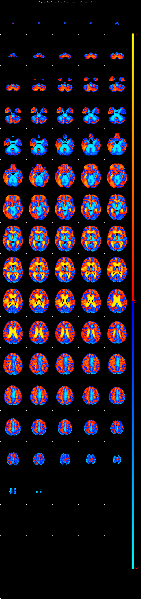
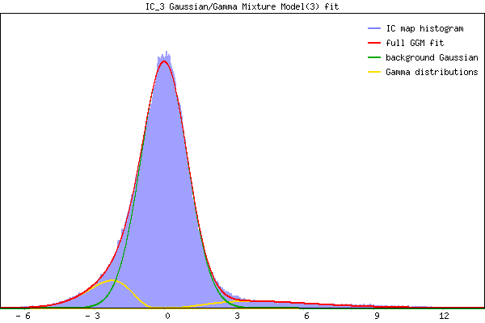

IC_3 Mixture Model fit
Means : -0.000000 5.105730 -2.649089
Vars : 1.000000 6.783248 1.071814
Prop. : 0.852049 0.055741 0.092210
This page produced automatically by MELODIC Version 3.15 - a part of FSL - FMRIB Software Library.